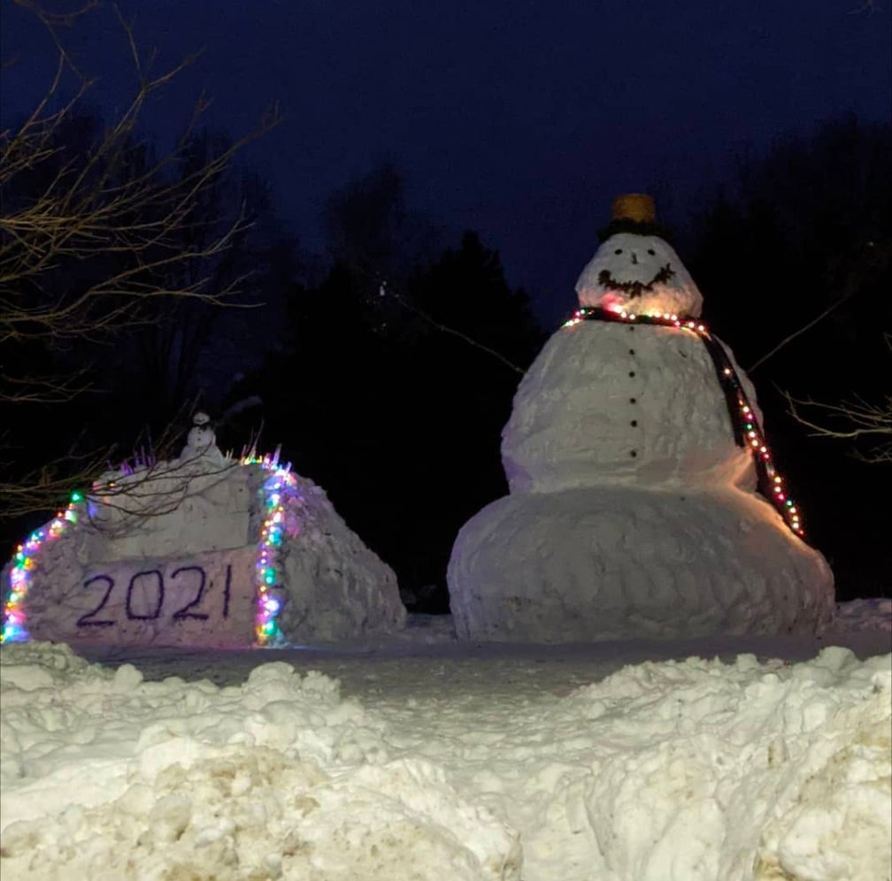
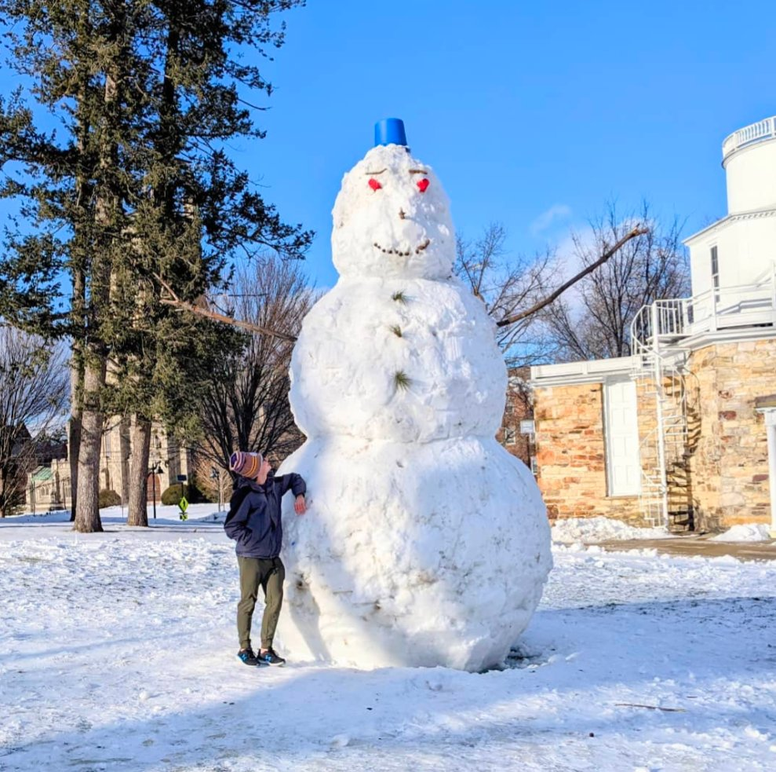
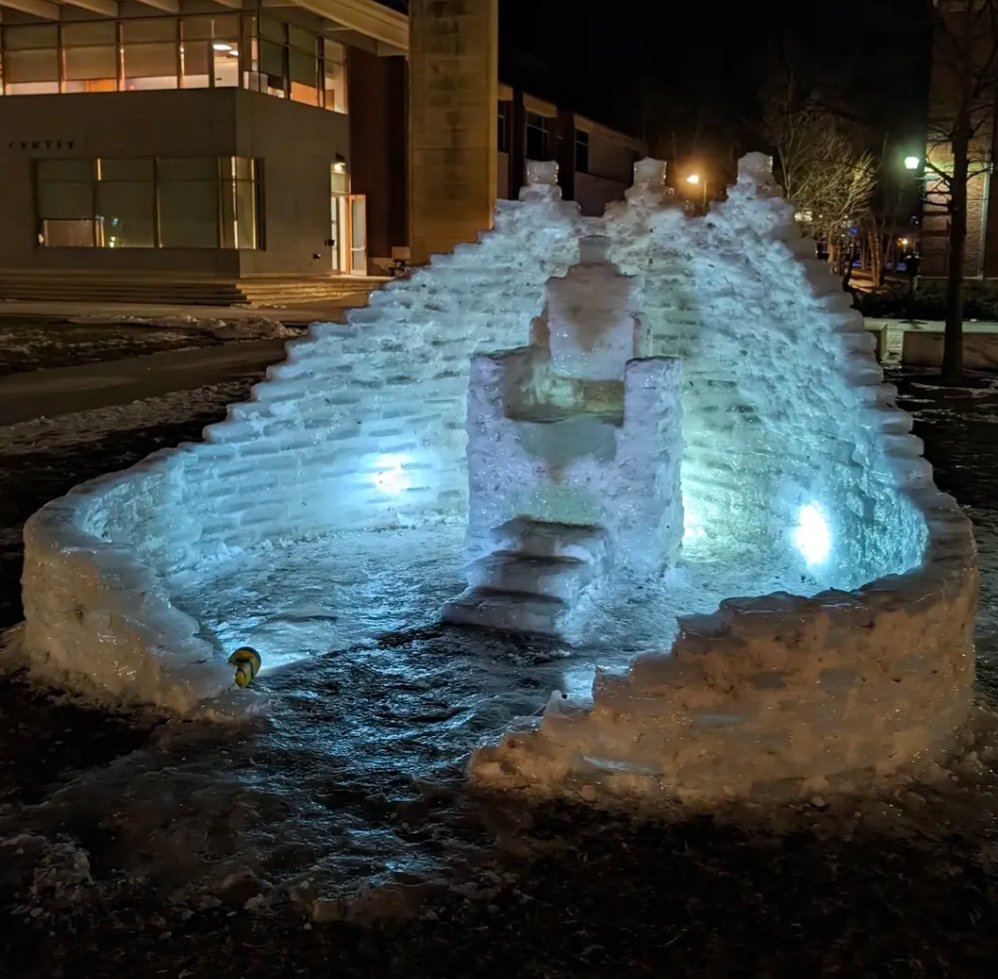
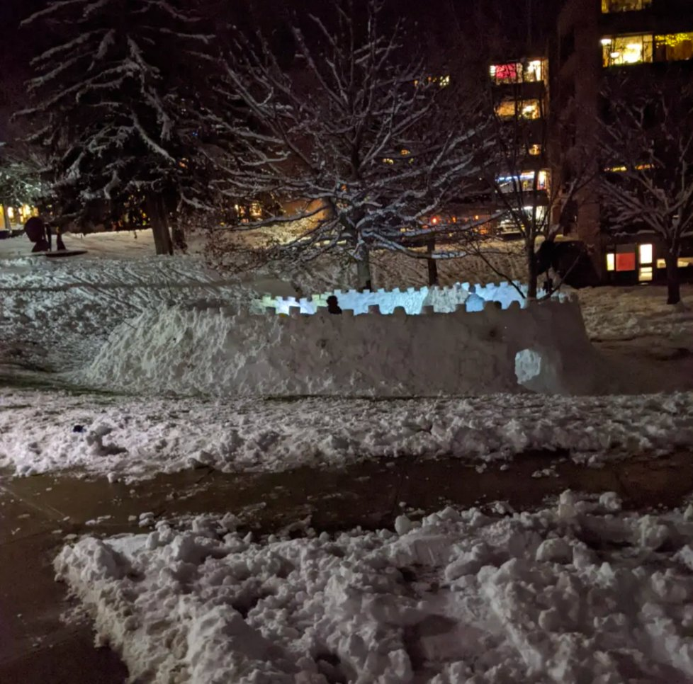
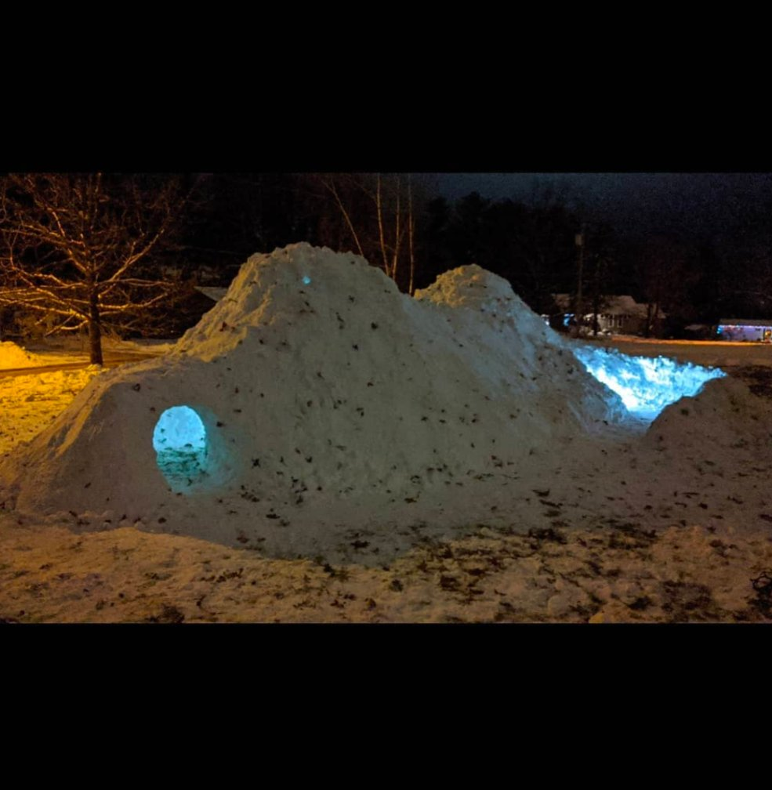
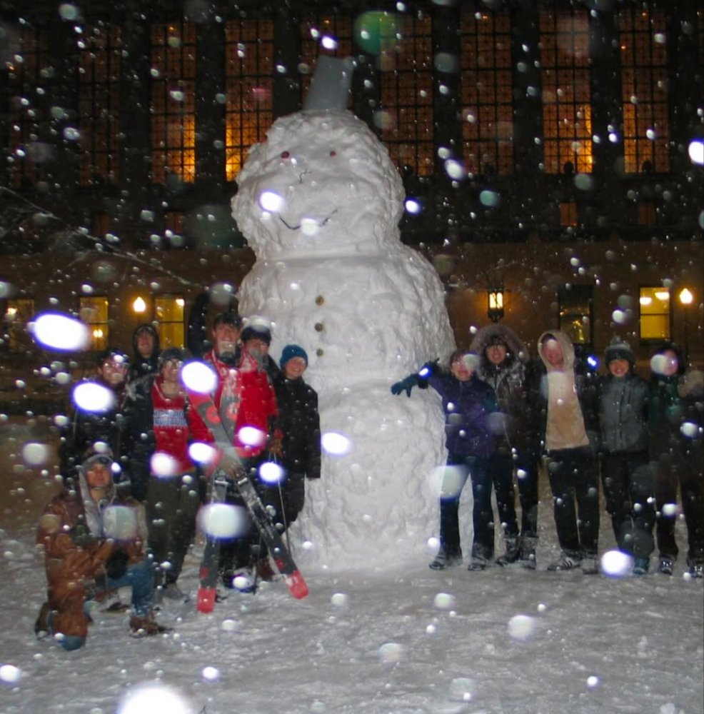
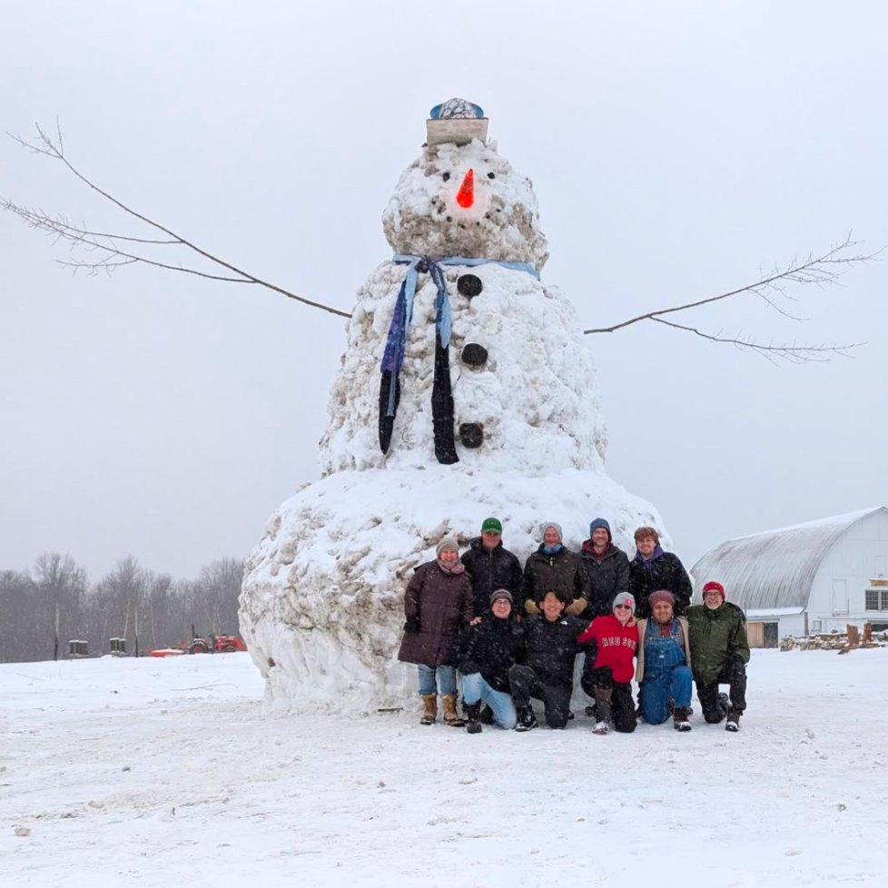
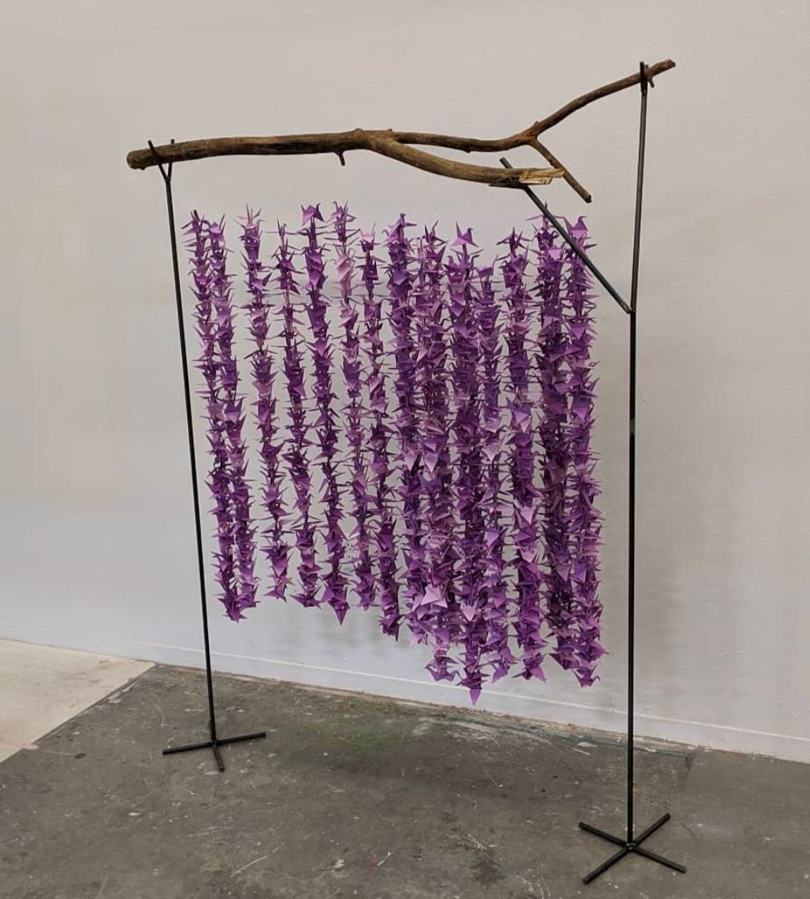

Hi! I'm a PhD candidate at NASA GISS and Columbia University studying aerosols — tiny liquid and solid particles in the atmosphere — which have an outsized influence on our climate, our weather, and the air we breathe.
Outside of research, I have many interests, ranging from filmmaking and snow sculpture to long-distance walking, which occasionally, and delightfully, collide with my science.
My research interests are all things aerosols and clouds. Currently, I use satellite data from NASA's PACE mission and NASA GISS ModelE climate model simulations to study the evolution of aerosol microphysical properties, and how they influence cloud formation.
I'm advised by Dr. Susanne Bauer and Dr. Kostas Tsigaridis, and supported by a NASA FINESST Graduate Fellowship.
Before starting my PhD, I built a cloud chamber at Williams College in collaboration with Prof. Anthony Carrasquillo and Prof. Miriam Freedman to study how aerosols respond to changes in humidity. Many undergo a striking transformation — separating into two distinct liquid phases, much like oil and water — with real consequences for how aerosols scatter light, facilitate cloud formation, and shape climate. I'm proud that students at Williams continue this research today.
Mutual Constraints on Global Aerosol Composition from Novel PACE Data and ModelE
In prep2024 · Highest Honors
Liquid-Liquid Phase Separation: Exploring the Effects of Hofmeister Salts and Organonitrates
B.A. Thesis · Williams College, Department of Geosciences
I believe science only matters as much as it is understood.
In 2025, I served as opening host for the 100-Hour Weather & Climate Livestream, a continuous global outreach event that reached 180,000+ live viewers and was featured in The New York Times.
This past spring, I walked 270 miles from New York City to Washington D.C., visiting 20 climate and weather scientists from 12 institutions along the way. I interviewed each of them about their research — and finished with a press conference on the steps of the U.S. Capitol, where I spoke to seven members of Congress about the importance of weather and climate science funding.
Music videos made with my mom across the North Country of upstate New York — a pandemic project that became something real.
More on the Koehler•Foisy Films page →
15-foot snowman at Williams. 24-foot snowman in Potsdam. Columbia's tallest ever snowperson. Snow forts, castles, igloos. There's a pattern.
Read about Buster → 🎵2.0M followers. 2.4B views. #73 globally in November 2022 with 355M monthly views. Paper-folding, music, science.
Follow @syl_foisy → 🎻Violin films with my mom across upstate New York's North Country — waterfalls, murals, mountains, frozen rivers.
Watch the films → 🥾Walked NYC to D.C. for climate outreach — speaking with students and scientists along the way, ending at the Capitol.
Read about the walk → 📰Featured in The New York Times, Columbia Spectator, NY Upstate, North Country Public Radio, and News10.
NY Upstate → 🐦Large-scale origami installations — including a curtain of 1,000 purple cranes hung from a driftwood branch.
See the videos →Gallery








Whether you're a collaborator, a curious person, a journalist, or a student — I'd love to hear from you.